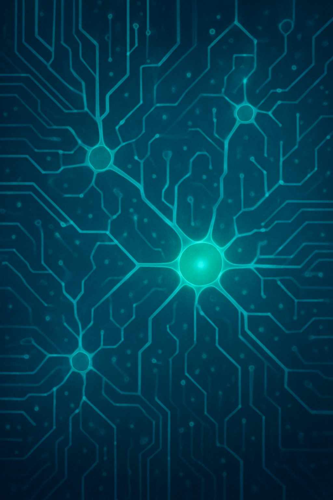
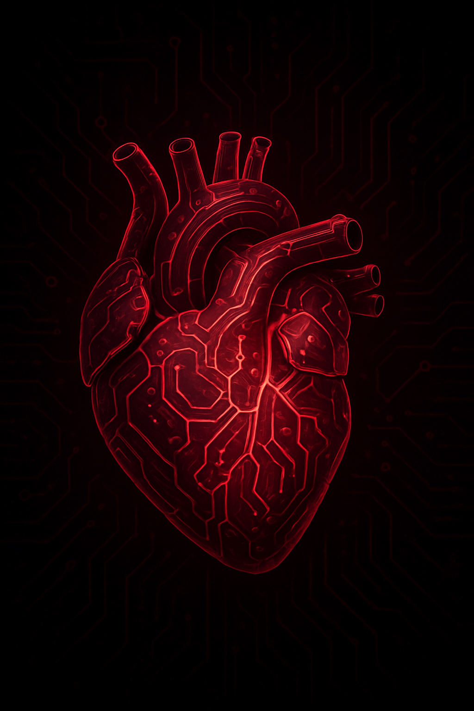
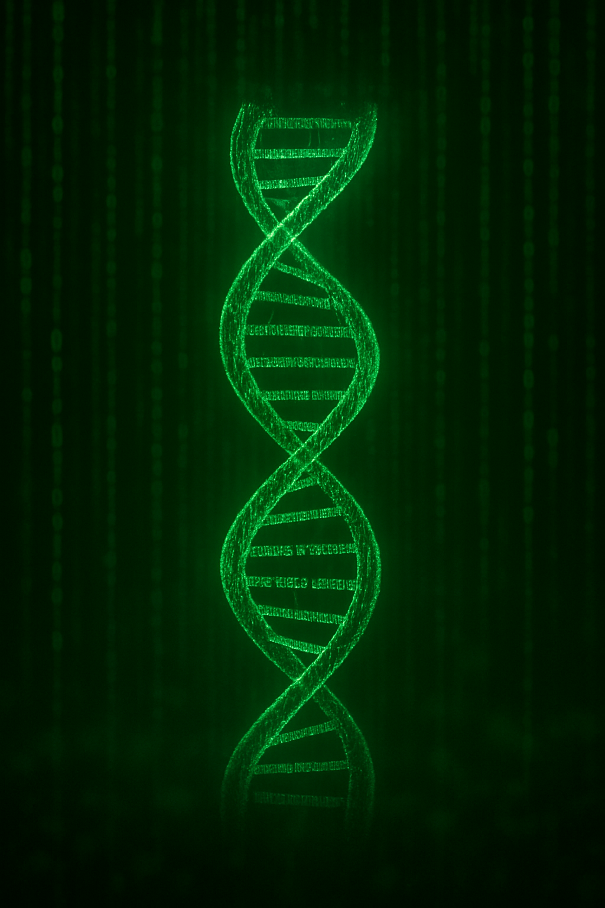

Neural Interfaces
Brain-computer interfaces promise unprecedented cognitive enhancement, but at what cost to mental privacy? Explore the implications of direct neural connections to digital networks and the potential for thought surveillance.
COGNITIVE
Genetic Editing
CRISPR and advanced gene therapy offer the power to eliminate genetic diseases and enhance human capabilities. But who decides what constitutes "improvement" and what are the societal implications of genetic inequality?
BIOETHICS
Synthetic Organs
Lab-grown organs and mechanical replacements could extend human lifespan indefinitely. Examine the philosophical questions of identity, consciousness, and what makes us fundamentally human.
IDENTITY
Digital Consciousness
The possibility of uploading human consciousness raises profound questions about the nature of self, mortality, and the soul. Is a digital copy truly you, or merely a sophisticated simulation of your existence?
EXISTENTIAL
The Implications


